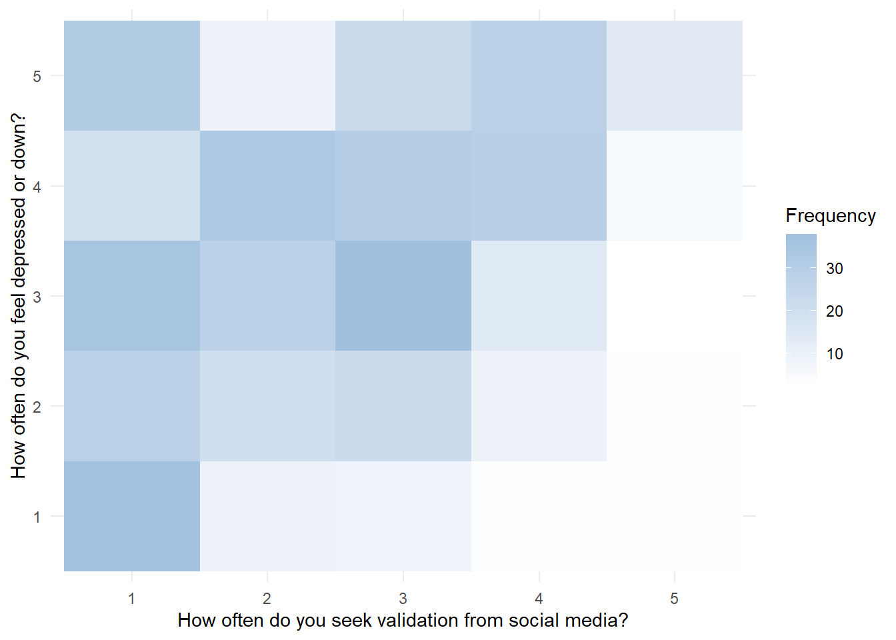

NM2207 Final Project
About
This project aims to find stories in data through visualization via shiny, ggplot2 and other functions with Rstudio.
Topic:
What are the relationships between social media usage and its negative impacts?
Background:
As social media usage continues to expand globally, there is a growing worry about its impact on the mental and overall health of individuals and communities. A survey conducted by the Cybersmile Foundation reveals that a significant 89% of social media users perceive social media as harmful to their mental well-being. According Ms Ranjini Veerappan, a certified addiction specialist at Holistic Psychotherapy Centre, a child’s brain is still maturing and rapidly developing until they are about 25 years old. This leads to the prevalence of negative effects of social media within youths. Research by the National Center for Health Research has also conducted a study on adolescents has identified that body image, for girls and boys, is harmed by social media use.
Social Media Usage by Age
This graphs shows that of all respondents, most of them in their tens to twenties uses social media.

Average time spent on social media daily
Next, we investigate the average time spent on social media daily. The graph indicates that the largest group of respondents spends more than 5 hours of their time on social media daily on average.
Sleep quality & concentration with social media usage
Next, we will compare the sleep quality and the concentration ability between respondents who use social media, and those who do not use social media. With the use of a Violin plot, it is evident that those who do not use social media never, or seldom face issues with regards to sleeping. On the other hand, the largest group of respondents who use social media indicated that they often face such issues.
A similar trend can be observed for the plot comparing the concentration ability of both groups. The plot has an inverse relationship between both graphs: Most who do not use social media indicated that they face minimal difficulty in concentrating on things; on the other hand, the plot is thicker at the top for those who use social media, indicating that they face greater difficulty in concentrating on things.
Relationship between Social Media usage and worries
To investigate the relationship between social media usage and its potential effect of causing worries to users, I have decided to adopt the usage of a heatmap. Starting on the side for those who do not use social media, respondents have only selected “1” and “2”, which indicates that they are not at all, to very minimally bothered by worries. On the other hand, the colour of the heatmap gets darker progressively, which is an indication that for those who use social media, there is an increasing trend of users being bothered by worries.
Seeking validation from Social Media

Shiny App
WordCloud